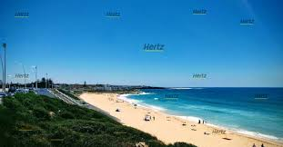
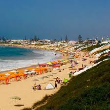
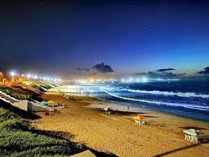
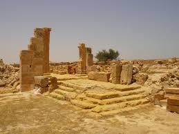
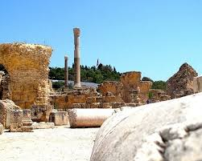
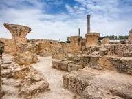
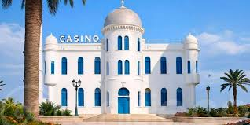
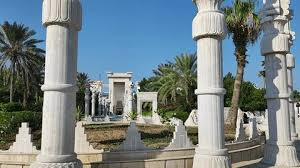
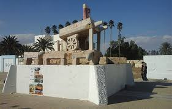

Sidi Bouzid – Cœur du centre tunisien
Le gouvernorat de Sidi Bouzid s'étend sur une superficie de 7379 km² et compte environ 412 mille habitants. Il est situé au centre de la Tunisie et est considéré comme le berceau de la Révolution tunisienne de 2011. l'un des premiers ports de pêche du pays et une activité touristique importante.
Sidi Bouzid se situe au centre du pays, se présentant comme un carrefour stratégique entre le nord et le sud, ainsi qu'entre l'est et l'ouest. La ville est située à environ 254 km de Tunis, 125 km de Sfax et 165 km de Sousse, dans une vaste plaine aride. La région a été créée en tant que division administrative en 1973.
Connue historiquement sous le nom de "Gammouda", la région de Sidi Bouzid a été le théâtre de diverses civilisations, de l'époque byzantine à l'époque arabo-musulmane, comme en témoignent plusieurs monuments et sites archéologiques. Plus récemment, elle a acquis une importance historique majeure en tant que point de départ de la Révolution tunisienne, suite à l'acte d'auto-immolation de Mohamed Bouazizi en 2011, un événement qui a inspiré une révolte nationale. Le lieu est désormais appelé "place du martyre" par les habitants.
Une plage locale pour se divertir et se baigner.



Les vestiges historiques de l'ancien nom de la région.



Exploration des quelques monuments et points d'intérêt locaux.


